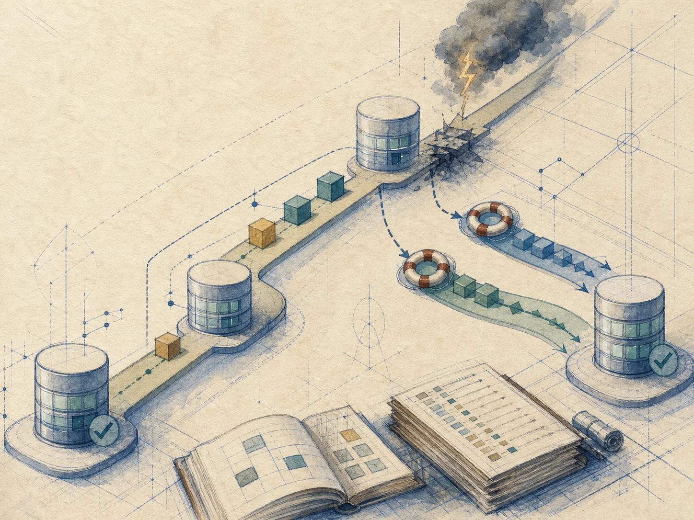
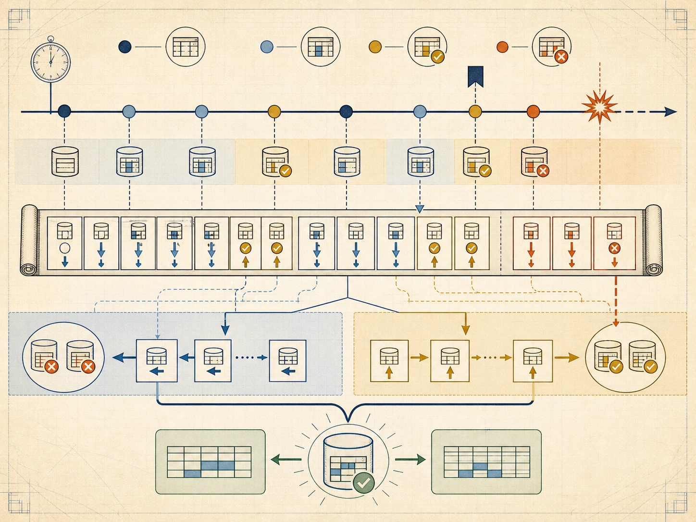
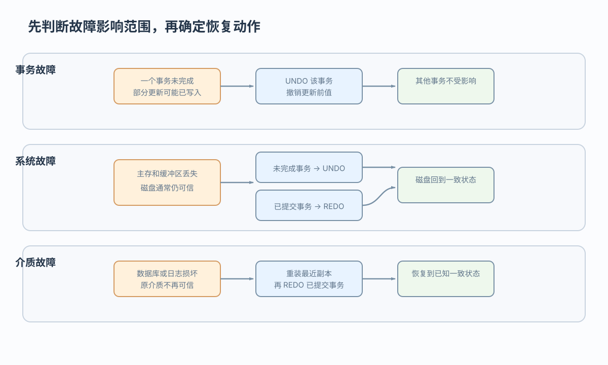

原子性
A 扣款与 B 入账要么都发生，要么都撤销

转账中断后：撤销半笔转账，还是补做已提交更新
 VER. 2608
Built with impress.js
VER. 2608
Built with impress.js
查看提交、数据页和磁盘，决定撤销未完成事务、补做已提交事务或恢复副本
一个程序可以包含多个事务；一个事务要么全部提交，要么全部撤销

不等于。COMMIT 接受事务结果并承诺持久保存，日志、缓冲和存储实现共同兑现这一承诺
A 扣 10 与 B 加 10 要一起完成，别人看不到中间余额，提交后断电也不能丢
A 扣款与 B 入账要么都发生，要么都撤销
转账前后总额仍为 150，余额和其他约束都成立
其他事务不能看到 A=90、B=50 这个未提交中间状态
提交成功后，即使系统崩溃也应恢复为 A=90、B=60
UNDO 避免只完成半笔转账，REDO 保住已提交余额；隔离性主要由并发控制保证
事务边界把两个更新绑定在一起，未提交暂态不应对外可见
| 时刻 | 余额示意 | 事务语义 | 对外状态 |
|---|---|---|---|
| 开始 | A=100，B=50 | 事务已开始 | 一致状态 |
| 中间 | A=90，B=50 | 未提交事务内部暂态 | 对外不可见 |
| 提交 | A=90，B=60 | 结果被接受并承诺持久 | 新的一致状态 |
| 故障 | 可能停在中间 | 未完成事务 | 按故障状态恢复 |
不能。未提交的半套更新必须撤销，转账事务只能整体提交或整体回滚
后备副本提供起点，日志说明之后哪些事务提交、哪些没有完成
恢复不保证回到故障前最后一秒，而要回到约束成立且事务状态说得清的时刻；日志、检查点和镜像决定能恢复到哪里
恢复的基本原理是用别处保存的数据重建被破坏或不正确的部分
故障范围不同，恢复动作也不同
| 故障 | 影响 | 典型来源 |
|---|---|---|
| 事务故障（事务内部故障） | 一个事务未正常结束 | 溢出、死锁、约束违约 |
| 系统故障 | 主存、缓冲区和运行事务丢失，磁盘通常仍可信 | 断电、操作系统或 DBMS 崩溃 |
| 介质故障 | 磁盘或日志被破坏，原介质不再可信 | 磁盘损坏、恶意加密 |
COMMIT、数据页落盘和磁盘可读性，决定 UNDO、REDO 或恢复副本

| 情况 | 动作 | 目标 |
|---|---|---|
| 事务未完成且更新已写入 | UNDO | 撤销未完成更新 |
| 系统故障后未完成／已提交事务 | 未完成 UNDO；已提交 REDO | 处理缓冲区丢失造成的两类缺口 |
| 介质数据损坏 | 重装可信副本并结合相关日志按状态 UNDO／REDO | 从可信状态重建 |
未完成事务可能已有写入，需要 UNDO；已提交事务的数据页可能尚未落盘，需要 REDO。介质恢复还要根据副本状态结合日志判断恢复动作
先判断事务是否完成、结果是否落盘、介质是否可信，再选择动作
A 已扣款、B 尚未入账，也没有提交记录：事务未完成，原子性要求撤销已经生效的部分
磁盘仍可信；T1 未提交、T2 已提交但部分页面未写回：对 T1 执行 UNDO，对 T2 缺失的结果执行 REDO
原数据库文件不再可信：先从可信副本重建，再结合相关日志按事务状态补做或撤销
完整答案要说明有没有 COMMIT、哪些页可能已写、日志是否完整、原磁盘能否读取，以及恢复后 A、B 应是多少